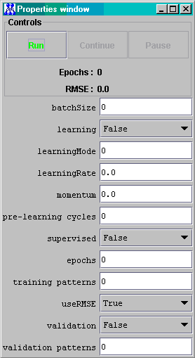

The Control Panel is the tool that controls the behaviour of the neural net. It contains three buttons:
|
Run: |
Starts the neural net beginning from the first pattern of the input data set. |
|
Continue: |
Restarts the neural net from the last pattern processed. |
|
Stop: |
Stops the neural net. |
The Control Panel parameters are:
| BatchSize: |
The number of the cycles for
each epoch into which the batch mode is active. If the batch mode is
true, insert here a number between 1 and TrainingPatterns. This
parameter permits to set the mixed batch mode, where the net learns in
batch mode from the cycle 1 to the 'batch size' cycle, and then learns
in on-line mode for the remaining cycles. |
|
Epochs: |
The total number of the cycles for which the net is to be trained. |
|
TrainingPatterns: |
The total number of input rows for which the net is to be trained. This can be different from the number of rows read from the FileInput component (lastRow – firstRow + 1). |
| ValidationPatterns: |
The total number of input rows
for which the net is to be validated. Used in conjunction with the
Validation parameter set to true. |
|
Momentum: |
The value of the momentum (see the literature about the back-propagation algorithm). |
|
Learning Rate: |
The value of the learning rate (see the literature about the back-propagation algorithm). |
|
Learning: |
True if the net is to be trained, otherwise set false. |
| LearningMode |
The leaning algorithm chosen to
train the network: 0 = On-Line Backprop (the default) 1 = Batch Backprop 2 = Resilient BackProp (RPROP) |
| Supervised: |
True if the net must learn in
the supervised mode. Normally you don't need to set this parameter, as
the editor understands and set the right learning mode by cheching the
presence of the Teacher component. |
|
Validation: |
True if the net is to be tested on a validation data set. Used ONLY in conjunction with a Learning Switch component inserted in the net. |
|
Pre-Learning: |
The number of initial cycles skipped from the
learning algorithm. Normally this parameter is zero, and is used when
there is a DelayLayer component in the net. In this case pre-learning
must be set equal to the number of taps of that component allowing its
buffer to become filled before the learning cycle starts. |
| UseRMSE |
If true, the error is calculated
as Root Mean Squared Error (RMSE), otherwise as Mean Squared Error (MSE) |
and an input delay layer with taps = 3 is present, then when the network might only have read the first two input values (0.2 and 0.5), and the output of this first layer would be:
In this case the network would learn the wrong {0, 0, 0.2, 0.5} pattern.
Thus the Pre-Learning
parameter must be set equal to the taps parameter so that the network
starts to learn only when all the ‘taps’ values have been read.

This adds a random noise component to the net and is useful for allowing the net to exit from a local minimum. At the end of a round of training, adding noise may ‘jolt’ the netork out of a local minimum so that further training produces a better network.
This reset the weights of a neural network, initializing it to a random state.
This command resets all the buffered input streams in input and
teacher layers, permitting the reloading of their buffers with the
input
data. This is useful after the contents of some files have changed and
it is necessary to reload the data.